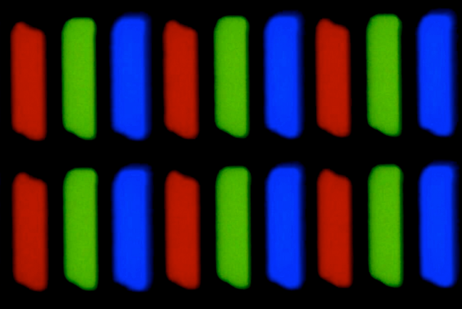

RGB vs CMYK
RGB și CMYK sunt două moduri de culoare folosite pentru a descrie culoarea în lumea fotografiei digitale. Ambele au un impact asupra culorii fotografiilor, atât pe ecran, cât și în tipărire.
Ambele sisteme au la bază 3 culori primare, din amestecul cărora, în diferite cantităţi, rezultă toate celelalte culori. RGB are la bază culorile roșu, verde şi albastru. CMYK are la bază culorile cyan, magenta şi galben.
Din amestecul culorilor primare două câte două din fiecare sistem se obţin, pe rând, culorile primare din celălalt sistem.
În modelul RGB din amestecul celor trei culori primare se obţine alb, pe când în modelul CMYK din amestecul celor trei culori culori primare se obţine negru. De aceea spunem că RGB este un model aditiv, iar CMYK este un model substractiv, albul reprezintă prezenţa totală a culorii, negrul absenţa totală a culorii.
Modelul RGB
RGB este un acronim pentru "Red Green Blue" (Roșu Verde Albastru). Aceasta face referire la cele trei culori primare, pe care pot fi combinate în cantități diferite pentru a obține orice altă culoare din spectrul vizibil, adică din acele culori pe care le putem vedea cu ochiul liber. Spectrul RGB are 256 de niveluri de luminozitate, care la rândul lor produc un total de 16.777.216 (256 x 256 x 256) posibilități de culoare.
Pe lângă televizoare și alte ecrane electronice, modelul de culori RGB este folosit și de alte dispozitive ce lucrează cu culori iluminate, precum camere foto și video ori scanere.
De exemplu, ecranele LCD sunt realizate din mulți pixeli care, împreună, formează suprafața lor. Fiecare din acei pixeli este, de obicei, realizat din trei surse diferite de lumină și fiecare dintre ele se poate colora în roșu, verde sau albastru. Dacă te uiți de aproape la un ecran LCD, folosind o lupă, poți vedea aceste mici surse de lumină care formează pixelii. Totuși, atunci când te uiți la ecran normal, fără o lupă, poți vedea doar culorile emise de acele surse minuscule de lumină din pixeli. Prin combinarea culorilor roșu, verde și albastru și prin ajustarea luminozității lor, pixelii pot forma orice culoare.
RGB este și cel mai răspândit model de culori folosit în software. Pentru a putea să specifice o anumită culoare, modelul de culori RGB este descris de trei numere, fiecare dintre aceste numere reprezentând intensitatea culorilor roșu, verde și albastru. Totuși, limitele acestor trei numere pot diferi în funcție de ce model de referință folosești. Notațiile RGB standard pot folosi triplete de valori de la 0 la 255, unele folosesc valori aritmetice de la 0,0 la 1,0, iar altele pot folosi valori procentuale de la 0% la 100%.
Modelul CMYK
Modelul CMYK este un mod substractiv de realizare a culorilor prin amestecarea fizică a unor pigmenți (cerneluri, tușuri, vopsele, etc.). În cazul acestui model de culoare, cernelurile și vopselele apar colorate datorită acțiunii luminii asupra lor. Fiecare cerneală absoarbe culorile din spectrul luminos, cu excepția propriei sale culori, pe care o reflectă. În acest model se folosesc 3 culori primare Cyan, Magenta, Yellow . Când se amestecă cele trei culori în cantități egale pe o suprafață, în teorie este absorbită toată lumina, astfel suprafața apare neagră. Datorită impurităților existente în cerneluri, negrul nu poate fi obtinut doar combinand cele trei culori primare. Prin combinarea celor trei culori primare va apare o culoare maronie. Este necesară adăugarea cernelii negre pentru a compensa aceste impurități. Cele patru culori primare (Cyan, Magenta, Yellow, Black) reprezintă cernelurile cu care tiparesc imprimantele cu jet de cerneală, imprimantele laser și presele tipografice. Pentru folosirea cernelei negre există mai multe considerente, în afară de inexactitea reproducerii culorii negre prin amestecul substractiv. Cerneala neagră este mai ieftină decât cele trei culori primare. Hârtia se va usca mai repede prin folosirea unui singur strat de culoare negru, decât prin amestecarea a trei straturi de culori.
Modelul CMYK este folosit pentru tipărire, culorile fiind obținute prin suprapunerea de nuanțe de cyan, magenta si galben, creând astfel iluzia unor tonuri continue asemeni unei fotografii. În modelul CMYK există 100 de variații ale fiecăreia dintre culorile substractive primare . Intensitatea fiecăreia dintre culorile primare este reprezentată pe o scara procentuală de la 0 la 100, unde zero reprezintă absența totală a culorii iar 100 pentru acoperirea totală a supafeței.
Gama de culori
Spectrul electromagnetic emis de soare (lumina) conține secțiuni pe care ochiul omenesc este incapabil să le vadă (culoare infra-roșie de exemplu).
Nici un spațiu de culoare folosit (RGB, CMYK, etc.) nu poate reprezenta toate culorile percepute de ochiul uman, sau cele care există în realitate. Când un anumit spațiu de culoare (în acest caz cel al ochiului uman) este incapabil să realizeze o culoare, spunem că este în afara gamut-ului.
Imaginea reprezentată pe un monitor prin modelul RGB este doar o aproximare a realității. Imaginile tipărite (modelul CMYK) sunt inferioare celor prezentate pe un monitor (modelul RGB).